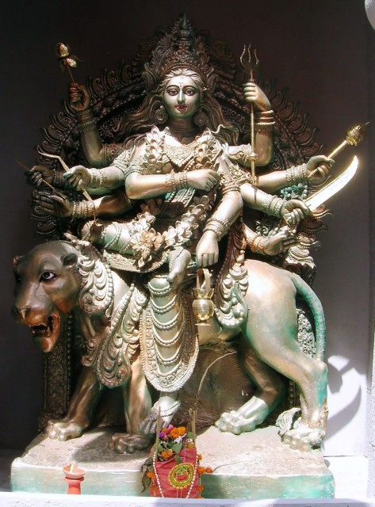

|
|||||
lordess sakthi
NAVA DURGA
CHANDHARAGHANTA
|
 |
|
The third
power or deity of Goddess Durga isfamous as the
Chandharghanta . He hasreceived the name of Chandharghanta
for wearing the half-moon of the hour's shapein the head.
Their physical characters are with the aura of gold; Goddess
Chandraghanta with ten arms isholding trident, gada, sword,
kamandal, bow, arrow, lotus flower, letter garland, as well
as show Varad and Abhay mudra. Goddess rides the tiger, the
goddess Tigeris the vehicle of the goddess ; Goddess
Chandraghanta holds various ornamental gems ornaments and is
always present or ready for war. |